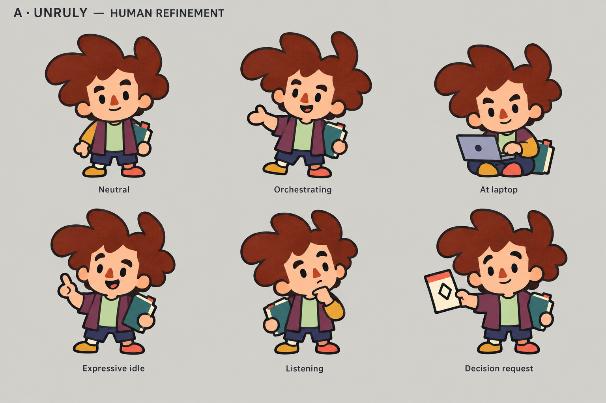
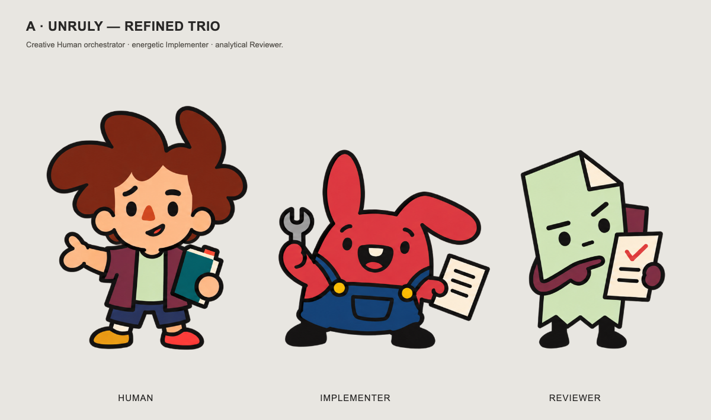
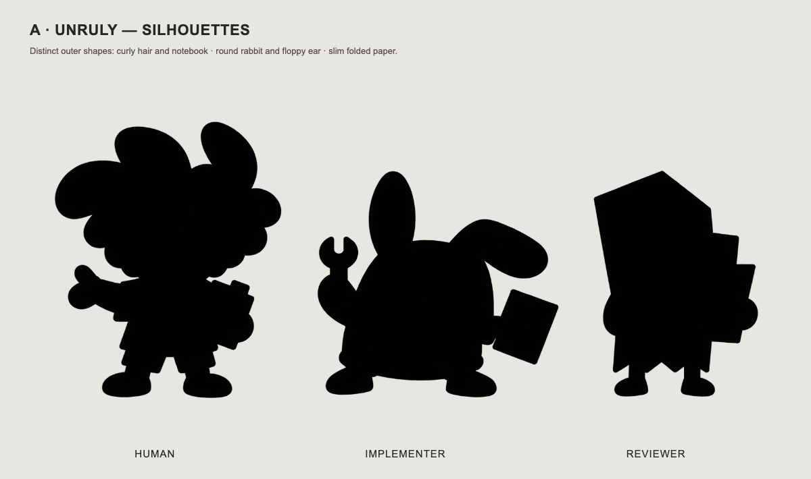
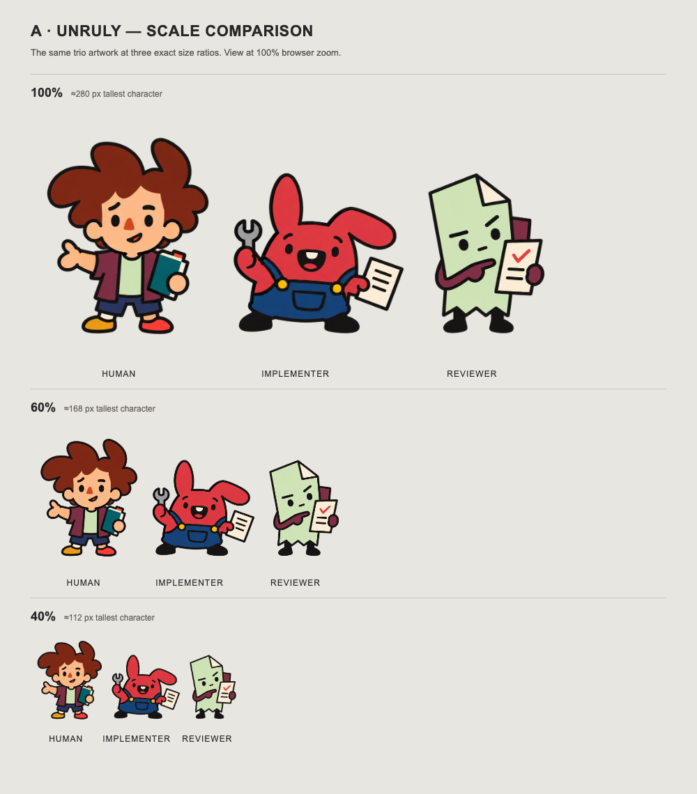

A · Unruly — focused cast refinement
The Human now has broad asymmetric auburn curls, a short plum-and-mint overshirt, mismatched shoes and a teal scorebook. Listening, a small new-idea expression and a loose cueing hand translate the creative-musician inspiration into an original orchestrator. Oversized faces, stubby bodies, dark imperfect contours and large color blocks keep the design in A · Unruly; the rabbit Implementer and paper Reviewer retain their identities.
Human — six poses

Refined trio

Silhouette lineup

Scale comparison
Open at actual pixel size · Same artwork at 100%, 60% and 40%. Tallest character approximately 280, 168 and 112 pixels; the current app's Human is about 292 pixels before viewport fitting.

Illustrations generated with built-in image_gen. Size comparison composed in HTML from the same transparent artwork, without redrawing. Full generation prompts.